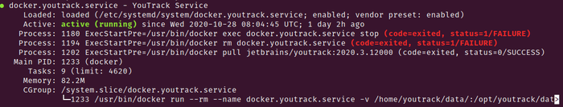

Until recently, I saw no good reason to use Docker, as my deployment tool of choice produces approximately identical builds, locally on my Ubuntu laptop, on staging and on production.
But time does not stand still and especially as I have to deploy a Java application, it was time to rethink my strategy, as I do not want to play the which Java runtime environment plays nicely together with which app version game.
Fortunately, JetBrains offers pre-built docker images for YouTrack, my favorite issue tracker, which is the app I plan to install today.
With a pre-built Docker image, running the app could be as simple as ...
docker run -it --name youtrack-server-instance \
-v {path to data directory}:/opt/youtrack/data \
-v {path to conf directory}:/opt/youtrack/conf \
-v {path to logs directory}:/opt/youtrack/logs \
-v {path to backups directory}:/opt/youtrack/backups \
-p {port on host}:8080 \
jetbrains/youtrack:{version}
... but it is both tedious to type this long command, and also the process would not survive a reboot of the host system.
NOTE: Do you know the difference between
docker create,docker runanddocker start?.
While we are here, let's dissect this complex command:
run creates and starts a container-it provides an interactive tty, ie show output in the terminal--name gives the container a name-v maps folders between the host and the container-p maps ports between the host and the containerjetbrains/youtrack:{version} is finally the docker imageInstead of manually starting the docker service, let's use systemd to start it, even after a reboot.
JetBrains offers a concise documentation on how to do this.
Basically, just create a unit file at /etc/systemd/system/docker.youtrack.service,
with the following content...
[Unit]
Description=YouTrack Service
After=docker.service
Requires=docker.service
[Service]
TimeoutStartSec=0
Restart=always
ExecStartPre=-/usr/bin/docker exec %n stop
ExecStartPre=-/usr/bin/docker rm %n
ExecStartPre=/usr/bin/docker pull jetbrains/youtrack:<version>
ExecStart=/usr/bin/docker run --rm --name %n \
-v <path to data directory>:/opt/youtrack/data \
-v <path to conf directory>:/opt/youtrack/conf \
-v <path to logs directory>:/opt/youtrack/logs \
-v <path to backups directory>:/opt/youtrack/backups \
-p <port on host>:8080 \
jetbrains/youtrack:<version>
[Install]
WantedBy=default.target
... where, on a very high level,
Finally, you can enable it via systemctl enable docker.youtrack,
so it starts after the next reboot,
and start and stop it manually via sudo service docker.youtrack start / sudo service docker.youtrack stop.
This all worked out perfectly,
and YouTrack was available via my browser,
except I was worried a bit about the output of systemctl status docker.youtrack:

Why are there two failures?
From all I knew about Docker, the run command should create and start a container, so the container should be persistent, even after a restart.
Which would finally mean, systemd should successfully stop and delete the docker container e.g. on restart.
Let's have another look at the Service section from above, especially at the following two lines.
ExecStartPre=-/usr/bin/docker exec %n stop
ExecStartPre=-/usr/bin/docker rm %n
ExecStartPre is pretty self explaining, and means "excute this command before starting the service"-, just before the command, means it is ok when the following command fails - do not stop on failure!%n expands to the service, ie docker.youtrack.serviceSo, this means, failures are expected!
Let's have a look at the run command...
ExecStart=/usr/bin/docker run --rm --name %n
ExecStart is the main processdocker run, as we now know, creates and starts a container--rm - here we go, this makes sure the container is deleted on exit!--name sets the name of the container%n is the placeholder for the serviceEverything is working as expected!
The stop and the delete commands are only safe guards,
just in case another container with the same name exists,
or is even running.
Running pre-built Docker images is a breeze.
But you certainly should know the basics :-)